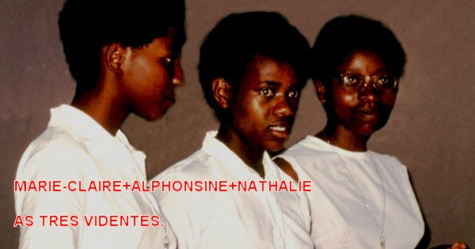
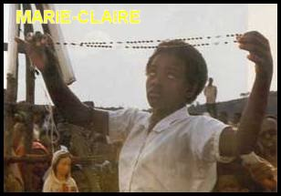
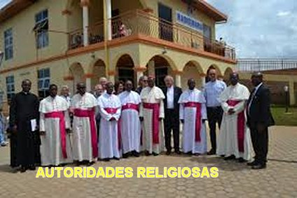
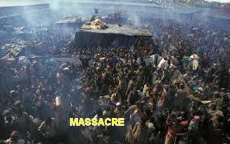
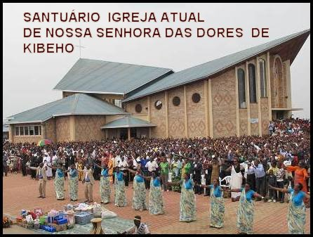

“RESUMO DAS REVELAÇÕES E ENSINAMENTOS PARA O MUNDO”
RELACIONADO PELO BISPO DOM AUGUSTIN MISAGO
1 – NOSSA
SENHORA faz um urgente apelo ao arrependimento e a conversão do coração:
“Arrependei-vos. Arrependei-vos.
Arrependei-vos”.
2 – ELA expressa uma avaliação do estado moral do mundo:
“O mundo está se conduzindo muito mal.”
“O mundo apressa a sua ruína e vai cair no abismo.”
“O mundo é rebelde contra DEUS, comete demasiados pecados, não tem amor e nem paz.”
“Se não se arrependerem e não converterem os vossos corações, cairão no abismo.”
3 – A MÃE DE DEUS revelou uma profunda tristeza:
“As jovens videntes afirmaram ter visto NOSSA SENHORA chorar no dia 15 de Agosto de 1982. A MÃE DE DEUS estava muito triste por causa da incredulidade das pessoas e a falta de remorso e de arrependimento pelos pecados cometidos.”
4 – A VIRGEM MARIA com muita tristeza falou: “Povo com Fé pequena e imensa incredulidade, como nunca antes vistas.”
Estas palavras tristes foram repetidamente pronunciadas pela VIRGEM MARIA a Alphonsine no início das revelações. Ela foi convidada por NOSSA SENHORA a repeti-las para as pessoas.
5 – NOSSA SENHORA disse:“O sofrimento salva.”
Em 15 de Maio de 1982 a SANTÍSSIMA VIRGEM MARIA disse às videntes, e especialmente a Nathalie:
“Ninguém chegará ao Céu sem sofrimento.”
“Um filho de MARIA não rejeita o sofrimento.”

6 – A VIRGEM MARIA recomendou à todos: “Rezai sempre com fervor e com o coração”.
As pessoas não estão rezando, e aqueles que rezam não rezam como deveriam rezar. A VIRGEM MARIA pede às videntes para rezarem muitíssimo por todo o mundo, ensinando os outros a rezar, e rezar por aqueles que não rezam. A VIRGEM MARIA pede que todos rezem com maior zelo e pureza de coração.
7 – Cultivem a “Devoção à VIRGEM MARIA”.
Essa Devoção deve ser manifestada através da sincera e regular oração do Rosário.
8 – “O Rosário das Sete Dores da MÃE DE DEUS”.
A vidente Marie Claire Mukangano afirma ter recebido revelações sobre este Rosário. Ele também agrada a MÃE DE DEUS. Numa época ele esteve em evidência, agora está mais esquecido, NOSSA SENHORA pede que ele seja relembrado e estimulado para as pessoas na Igreja. Todavia, esta oração não substitui a reza do Santo Rosário que não pode ser substituído.
9 – "A VIRGEM MARIA quer que seja construída uma Capela para ELA.”
ELA quer esta Capela como sinal da memória de suas revelações em Kibeho. Esta solicitação foi feita por ELA nas revelações do dia 16 de Janeiro de 1982, e depois repetiu em outros dias.
10 – “Rezai sempre pela Igreja, por seus Ministros e Auxiliares”.
Muitos problemas estão para ocorrer nos tempos que estão para vir. Assim a VIRGEM MARIA disse a Alphonsine no dia 15 de Agosto de 1983 e no dia 28 de Novembro de 1983:
“O que EU digo
não é dirigido somente a uma pessoa e nem se refere somente aos tempos atuais; é
dirigido a todos, a toda humanidade no mundo”. 
As Videntes fazendo uma análise dos conselhos e dos ensinamentos da MÃE DE DEUS, fica claro que ELA não veio a Kibeho com um novo ensinamento, mas para nos lembrar o que a maioria da humanidade esqueceu. Nossa MÃE SANTÍSSIMA veio nos despertar e agitar as nossas consciências, nos alertando das nossas responsabilidades como filhos de DEUS. ELA quer todos nós seguindo o caminho do direito, da justiça e do amor fraterno, corrigindo a nossa existência terrestre olhando para o bem de todos, afim de poder imaginar as maravilhas que poderão desfrutar para sempre na eternidade. Resumindo, ELA veio para estimular a renovação espiritual das pessoas, com o objetivo maior e insubstituível, de cada um conseguir a sua Salvação Eterna. A SANTÍSSIMA VIRGEM MARIA é nossa MÃE, que nos conhece individualmente e ama cada um com o mesmo carinho. ELA não quer abandonar os SEUS filhos à perdição da sua alma, dom tão precioso e eterno, que nos foi enviado por DEUS para compor a nossa existência. ELA quer a nossa salvação. ELA quer a nossa alma no paraíso DIVINO.
A REALIDADE: Todas as pessoas são constituídas de um Corpo e de uma Alma. Ninguém vive sem eles. O Corpo é formado pelo amor de nossos pais após o Matrimônio; a Alma vem de DEUS, foi inventada por ELE. NOSSO SENHOR nos envia a Alma repleta de Graças e Virtudes; Ela entra no Corpo, transformando-o num “Ser” que nascerá para a vida, com Corpo + Alma. Significa dizer: cada ser humano que nasce tem uma “parte humana” gerada pelos nossos pais e uma “parte Divina” que é enviada por DEUS a cada pessoa que nasce. E devemos realçar que é a “Alma” verdadeiramente, que nos proporciona a vida. Por isso mesmo, devemos cuidar de nossa “Alma”, com o maior carinho e atenção, da mesma maneira e cuidados que damos ao nosso “Corpo”. Cuidamos de nosso “Corpo” alimentando-o convenientemente, praticando esportes quando necessários, distraindo e dormindo nas oportunidades certas, etc. Cuidamos de nossa “Alma”, permanecendo sempre em contato com DEUS, através de nossas orações, das Santas Missas que participamos, dos Sacramentos que recebemos com amor e respeito, e também, sempre que cultivamos ao longo de nossa existência um comportamento fraterno e misericordioso, atendendo e prestando auxílio as pessoas que necessitam de nossa ajuda. Este é o alimento da "Alma". E vivendo assim, estaremos de acordo com a Santa Vontade de DEUS.
NO FINAL DAS APARIÇÕES

A MÃE DE DEUS recomendou aos videntes que saíssem de Ruanda, pois seria perigoso permanecer residindo em Kibeho, em razão dos terríveis acontecimentos que iam ocorrer posteriormente.
No dia 15 de agosto de 1982 os videntes ficaram por oito horas em estado de êxtase. Depois, quando voltaram à realidade, revelaram-se chocados e chorosos com as imagens que a VIRGEM MARIA lhes proporcionou ver: eram corpos ensanguentados e não sepultados, fogo por todos os lados, a terra rachando e se abrindo, pessoas decapitadas e figuras monstruosas.
NOSSA SENHORA, com lágrimas nos
olhos, descreveu para as três videntes juntas aquelas cenas impressionantes
que deixaram as moças repletas de 
CONSAGRAÇÃO DO NOVO SANTUÁRIO
No dia 31 de maio de 2003, às dez horas da manhã, estava o Prefeito da Congregação para a evangelização dos povos, enviado pelo Papa João Paulo II, formalizando a consagração do SANTUÁRIO DE NOSSA SENHORA DAS DORES em Kibeho, através da Santa Missa solene realizada com a presença de todos os Bispos ruandeses e diante de todos os fiéis se repetiu o fenômeno milagroso da dança do sol, como aconteceu em Fátima no dia 13 de outubro de 1913. O fenômeno durou oito minutos e foi filmado e fotografado por repórteres profissionais e amadores. Depois de ver todos os documentos, o Papa João Paulo II declarou “NOSSA SENHORA DAS DORES DE KIBEHO é a Fátima do Coração da África”.
O santuário mariano de Kibeho foi nomeado "SANTUÁRIO DE NOSSA SENHORA DAS DORES" em 1992. A primeira pedra fundamental foi lançada em 28 de novembro de 1992. Num acordo estabelecido em 2003 entre o Ordinário local e a Sociedade do Apostolado Católico (Palotinos), a Reitoria do “SANTUÁRIO DE NOSSA SENHORA DAS DORES” foi confiada aos Padres Palotinos. O Reitor é nomeado pelo Bispo Diocesano local e pelo Reitor Regional Palotino.
COMPROVANDO AS APARIÇÕES

A partir de 1982 o senhor Bispo Dom Augustin Misago, Bispo de Gikongoro, criou duas Comissões de estudos: uma de médicos e outra de teólogos, para esclarecer e firmar todas as questões relativas às Aparições de NOSSA SENHORA em Kibeho.As duas Comissões começaram a trabalhar a partir do mês de Abril, produzindo elementos suficientes que permitiram as autoridades eclesiásticas se pronunciassem com competência e definitivamente sobre as Aparições da VIRGEM MARIA em Kibeho. E a respeito, o L’Osservatore Romano publicou em Julho de 2001 a conclusão das pesquisas e a palavra do senhor Bispo Dom Augustin, tornando possível e absolutamente claras as respostas com o objetivo de atender as expectativas do povo de DEUS. E L’Osservatore Romano realçou:
“Como resultado, Dom Augustin Misago de Gikongoro, que representa essa autoridade eclesiástica, publicou a sua Declaração sobre a decisão final a respeito das Aparições em Kibeho, Ruanda. Esta divulgação de evento importante na história da Diocese de Gikongoro, como também na vida da Igreja no Ruanda, ocorreu em 29 de Junho de 2001, na solenidade dos Santos Pedro e Paulo, durante a celebração da Santa Missa solene na Catedral de Gikongoro, com a presença de todos os Bispos Católicos do Ruanda, e também o Núncio Apostólico de Kigali”.
O senhor Bispo declarou na homilia durante a Santa Missa:
“Sim a VIRGEM MARIA apareceu em Kibeho desde o dia 28 de Novembro de 1981 e nos meses que se seguiram. Há mais razões para acreditar nas Aparições do que para negar... As Aparições de Kibeho são agora oficialmente reconhecidas... O nome dado ao SANTUÁRIO MARIANO DE KIBEHO é “SANTUÁRIO DE NOSSA SENHORA DAS DORES”. Kibeho é um lugar de peregrinação e de encontro para todos os que procuram CRISTO e que vai lá para rezar, um centro precioso de conversão, de reparação pelos pecados do mundo e de reconciliação; um ponto de encontro para todos os que foram dispersos, como também para aqueles que aspiram aos valores de compaixão e fraternidade sem fronteiras, um centro admirável que recorda o Evangelho da Cruz.”
PALAVRAS DO PAPA FRANCISCO
Assim, Tendo a Igreja reconhecido oficialmente as Aparições da VIRGEM MARIA em 2001, bem como o seu valor profético, o Papa Francisco, no final do “Ângelus” de 6 de Abril de 2014, também expressou publicamente essa mesma posição, com estas palavras:
“Queridos Irmãos e irmãs, amanhã, no Ruanda, recorda-se o vigésimo aniversário do início do genocídio contra os tutsis em 1994. Nesta ocasião, desejo expressar a minha proximidade paternal ao povo ruandês, encorajando-o a prosseguir com determinação e esperança o seu processo de reconciliação, que já tem mostrado frutos, e o compromisso de reconstrução humana e espiritual do país. A todos eu digo: não tenham medo! Na rocha do Evangelho construam a sua sociedade, no amor e na harmonia, pois só assim se gera uma paz duradoura!”
“Invoco sobre toda a amada nação de Ruanda a proteção Materna de NOSSA SENHORA DE KIBEHO. Lembro-me com afeto dos Bispos Ruandeses que estiveram aqui no Vaticano na semana passada. E a todos vocês eu convido, agora, a rezar à VIRGEM MARIA, NOSSA SENHORA DE KIBEHO. Amém.”